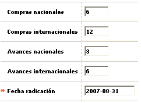

Novedad cambio plazos diferidos
Este formulario invocado desde la opción ingreso de novedades, (issuer) le permite a la entidad cambiar el plazo, de forma simultánea, a todas las transacciones, de la misma clase, que a la fecha estén vigentes para la tarjeta u obligación. Es una manera sencilla de facilitarle por ejemplo el pago de la obligación al cliente, disminuyendo el monto de su pago mínimo, sin necesidad de recurrir a la figura de refinanciación.

Descripción de campos
Compras nacionales |
En este campo numérico de hasta tres dígitos se indica el plazo que aplicará para todas las transacciones vigentes y que correspondan a compras nacionales. |
Compras internacionales |
Campo numérico de hasta tres dígitos en el que puede registrar el plazo que aplicará para todas las transacciones vigentes y que correspondan a compras internacionales. |
Avances nacionales |
En este campo numérico de hasta tres dígitos se indica el plazo que aplicará para todas las transacciones vigentes y que correspondan a avances nacionales. |
Avances internacionales |
Campo numérico de hasta tres dígitos en el que puede registrar el plazo que aplicará para todas las transacciones vigentes y que correspondan a avances internacionales. |
Fecha de radicación |
Campo obligatorio en el que se registra en formato YYYY-MM-DD la fecha en la cual se solicitó la modificación del plazo de diferido para la tarjeta y que puede ser una fecha anterior a la actual del sistema, facilitando el ingreso de novedades de fechas anteriores. |